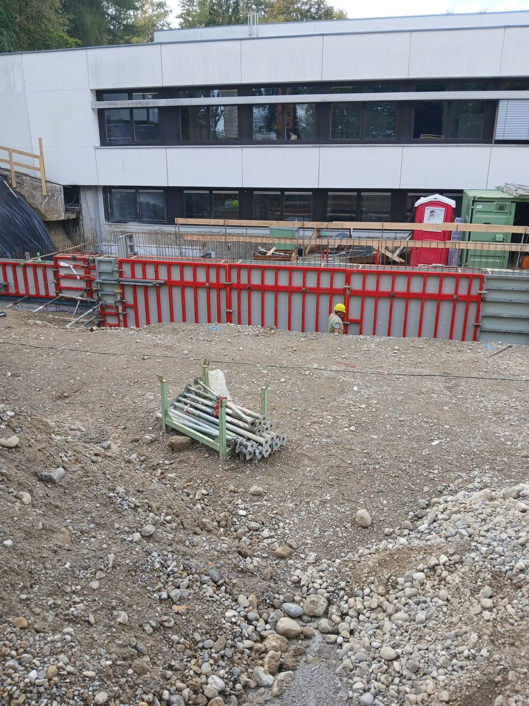
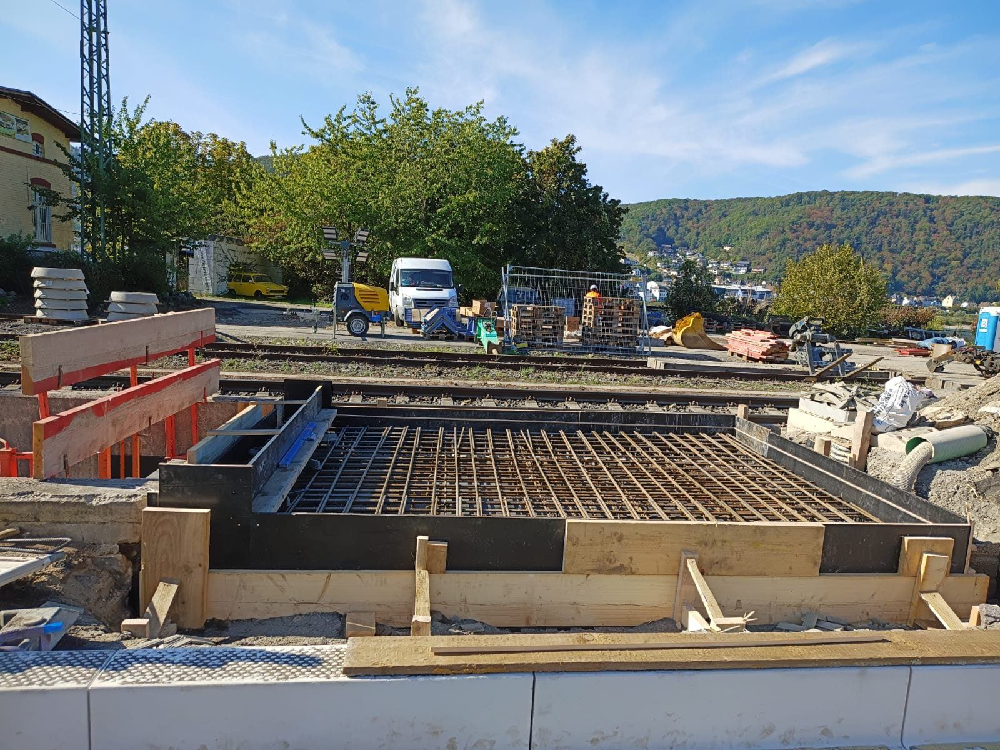
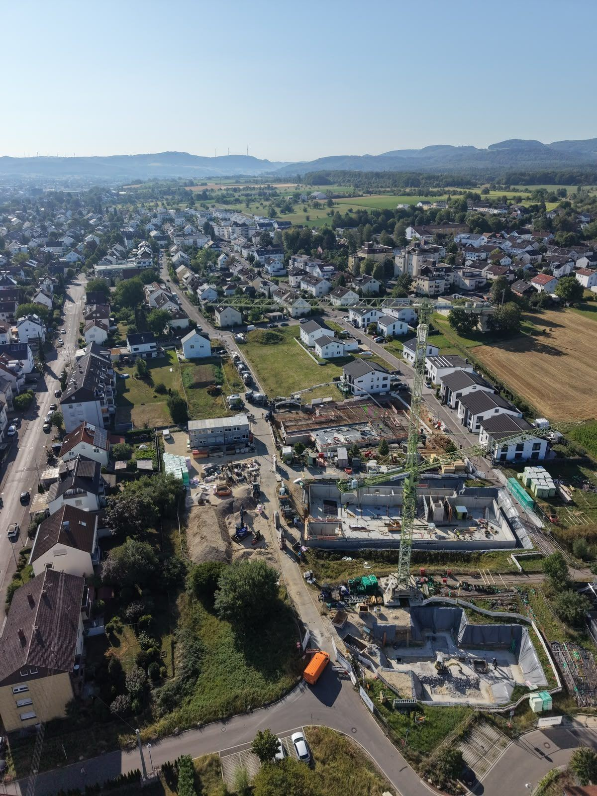
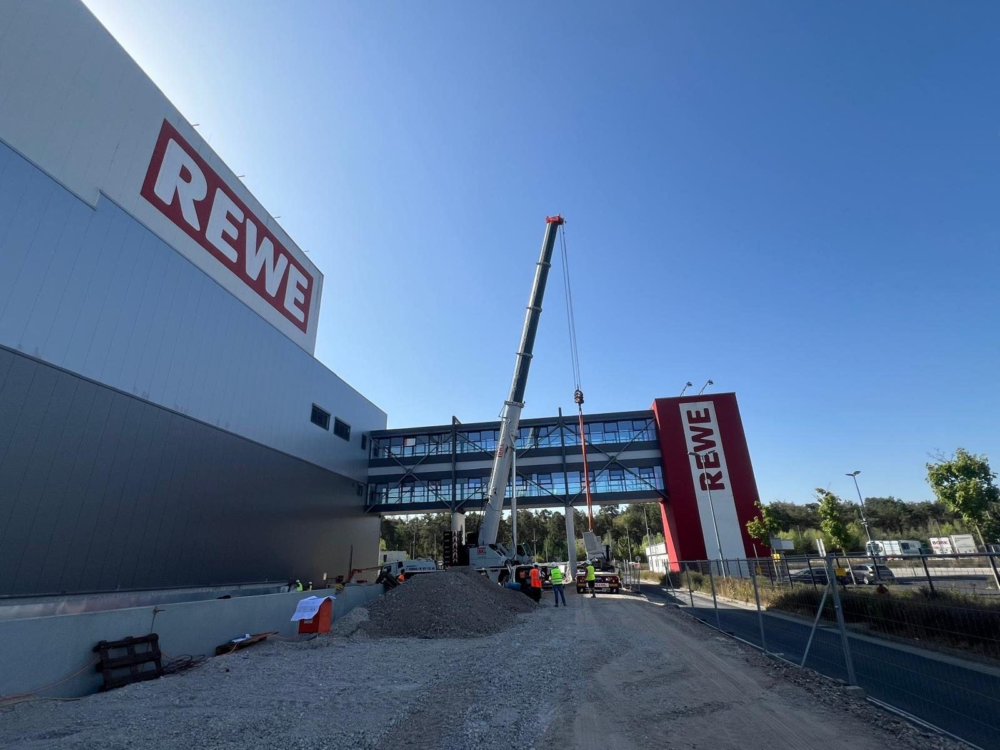

Referenzen
Wo unsere Kolonnen stehen
Wohnungsbau, Gewerbe, öffentliche Bauten und Infrastruktur: eine Auswahl unserer laufenden und abgeschlossenen Projekte.

Öffentlicher Bau Neubau Gymnasium Kempten Kompletter Rohbau in Ortbeton für Geiger, direkt am Bestandsgebäude.Projekt ansehen
Infrastruktur Pfahlköpfe für den Gleisbau Pfahlköpfe in Ortbeton inkl. Schal- und Bewehrungsarbeiten für LEONHARD WEISS.Projekt ansehen
Wohnen Wohnquartier im Klingelgraben Neubau eines Wohnquartiers für Gustav Eppel. Rohbau im Lohn, Baukörper für Baukörper.Projekt ansehen
Gewerbe REWE Neu-Isenburg Köcherfundamente und Montage der Winkelstützwände für RG Hoch & Tiefbau.Projekt ansehen